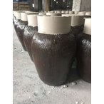

15年物紹興酒 最高級品 5000ml甕入り 香月マーク
世界三大美酒の一つと言われている紹興酒。 アミノ酸の含有量はとても高く、香り豊かな長期熟成した醸造酒です。 コクや香りに深みがあり、その風味は中華料理によく合います。 特に油っこい料理にピッタリ！肉料理や揚げ物、炒め料理など 味の濃い料理との相性はバッチリです♪ ストレートでお飲みするのがオススメですが、 燗にしてザラメ糖や干し梅を入れて飲んでも美味しいです。 当ストアが仕入れております、 王宝和酒造は200年以上の古い歴史があり、 紹興市にある紹興酒6大メーカーの中の1つです 王宝和酒造の紹興酒は中国全土で人気が高く、 品質管理を重視しており安心してお召し上がりいただけます。 【熟年数】：15年 【容量】：5000ml 【アルコール分】：１７度 【区分】：加飯酒 【原産地】：浙江省紹興市 【保存方法】：常温保存 ＜店長イチオシ♪＞ 私が直接買い付けを行っておりますので、 貴重な熟年数が高い紹興酒も、お値打ち価格で販売できております。 紹興酒は、料理の隠し味の料理酒として重宝します。 私は良く手作り肉まん作る時、隠し味として使います。 ＜中華料理屋さんへ＞ 大量注文も受け付けております。